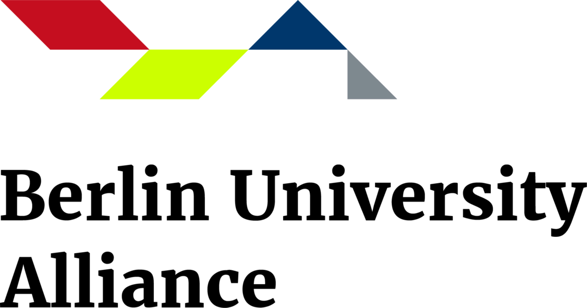
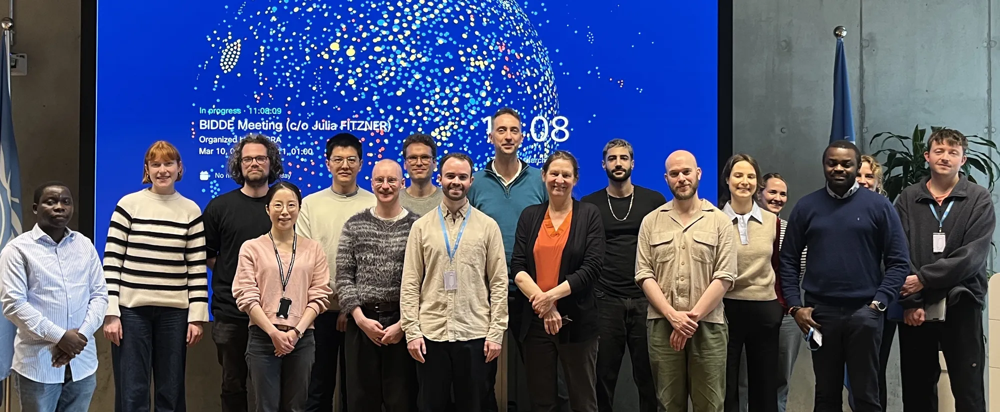

B-IDDE
The Berlin Infectious Disease Dynamics Expertise Network: monthly training and seminars connecting more than 60 modellers, epidemiologists and data scientists across the city.
- Next meeting
- See events
- Members
- More than 60
- Credits
- ECTS accredited
About the network
B-IDDE is a Berlin-based interdisciplinary network connecting researchers working on infectious disease dynamics, epidemiological modelling, data science, phylodynamics and policy-relevant outbreak analysis.
B-IDDE brings together researchers across Berlin with expertise or interest in infectious disease modelling, data analysis and outbreak analytics. We are currently a group of more than 60 members from universities, research institutes and public health organisations across the city.
The network is open to all researchers working on infectious disease dynamics in Berlin, including those from academia, public health institutions and other relevant organisations. We welcome members with a wide range of expertise, including epidemiological modelling, data science, phylodynamics and policy-relevant outbreak analysis.
The main activity of the network is monthly meetings, which consist of a training session followed by a seminar. The training sessions cover a range of research skills needed in infectious disease dynamics. The seminars feature presentations from members of the network as well as regular invited speakers on current research and policy-relevant topics in the field.
Attendance is ECTS accredited; ask the secretariat for details.
Events
Meetings are usually held on the second Tuesday of the month. To receive calendar invitations, email the B-IDDE secretariat.
Next meeting
Later meetings
Past meetings
Contact
If you wish to join the network or receive calendar invitations for the meetings, please contact the B-IDDE secretariat.
The secretariat is supported by the Einstein Foundation and the Berlin University Alliance.

